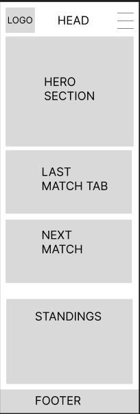
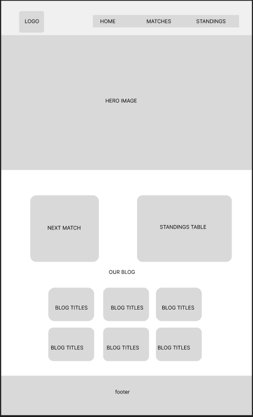

Project Overview
This website will serve as the official platform for the Mashcentral Basketball Association, a community-driven basketball league. It will provide key information such as upcoming matches, league standings, and contact options, with added functionality like live weather forecasts for outdoor games.
Site Purpose
The purpose of this site is to provide a hub for basketball players, fans, and volunteers in the Mashcentral region. It will include dynamic features like match schedules, standings, and weather forecasts to enhance the user experience.
Scenarios
- What are the upcoming matches and their locations?
- How can I sign up as a player or volunteer?
- What are the current league standings?
- What is the weather forecast for the next game?
Color Scheme
#f84b45: Primary .
#2c3338: secondary.
#333333: Accent-1.
#ffcc00: Accent-2.
Typography
- Roboto: Used for headings and body text.
- Open Sans: Used for secondary text and captions.
Wireframe
Mobile View:
Desktop View:
Home Page Design
Header
- Logo: A stylized basketball icon with the association's name.
- Navigation Menu: Home | Matches & Standings | Contact
Main
- Hero Section: A captivating image of a basketball court with players in action.
- Tagline: A concise and memorable tagline, such as "Where Passion Meets the Court."
- Brief Description: A brief overview of the website's purpose and benefits to users.
- Key Features:
- Upcoming matches and live weather forecasts.
- League standings displayed dynamically.
- Contact form for player and volunteer sign-ups.
- Interactive map showing game venues.
- Call to Action: A prominent "View Matches" button to encourage users to explore the schedule.
Footer
- Social Media Links: Icons for connecting with the association on social media platforms.
- Contact Information: Email address, phone number, and physical address.
- Legal Information: Terms of Service, Privacy Policy, and other legal documents.